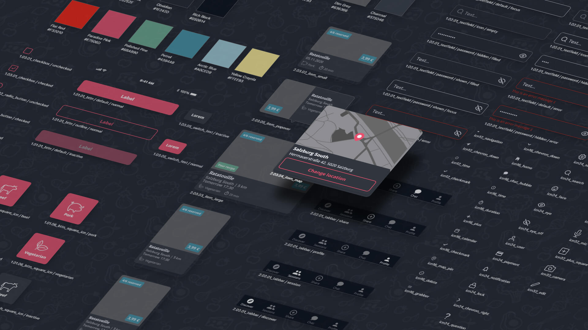
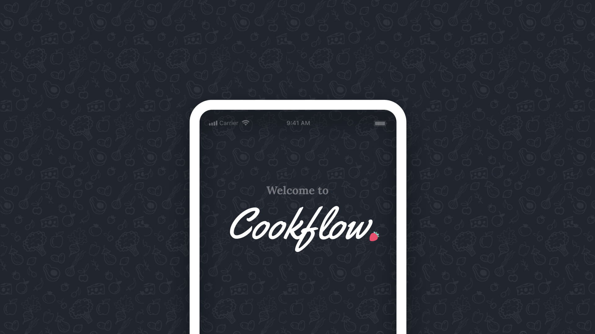
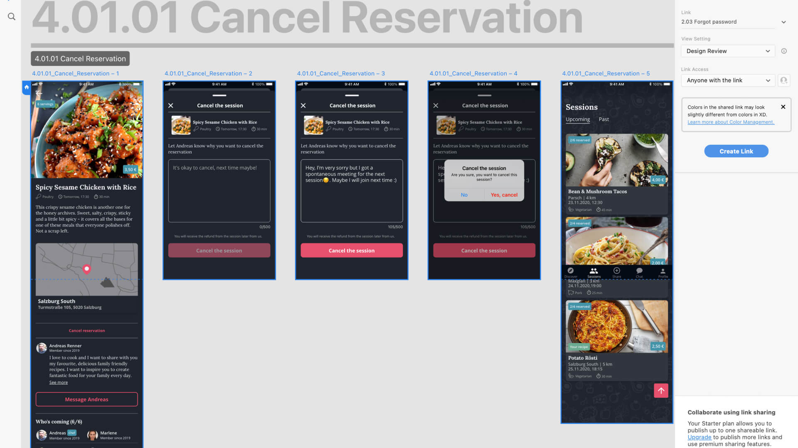
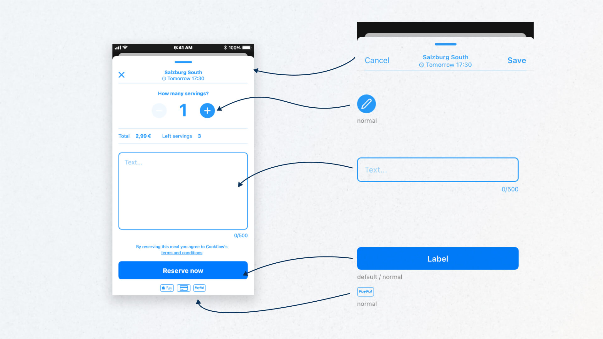
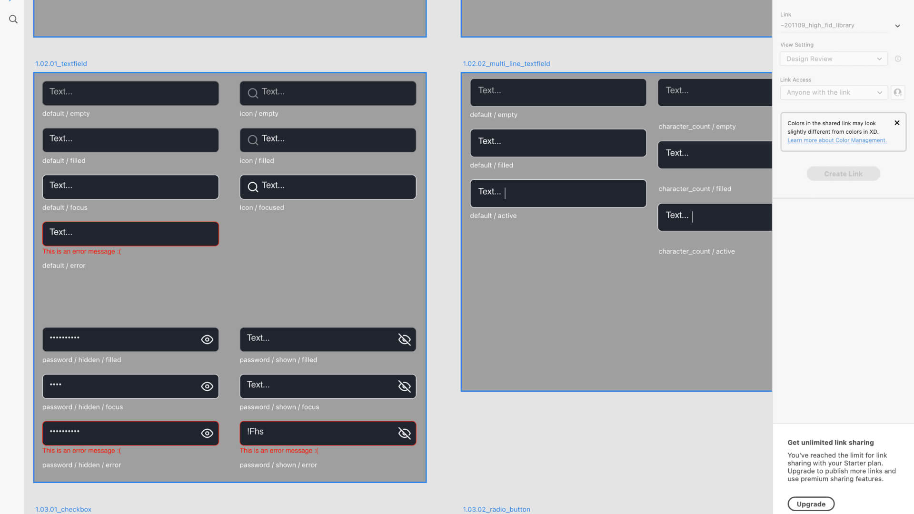
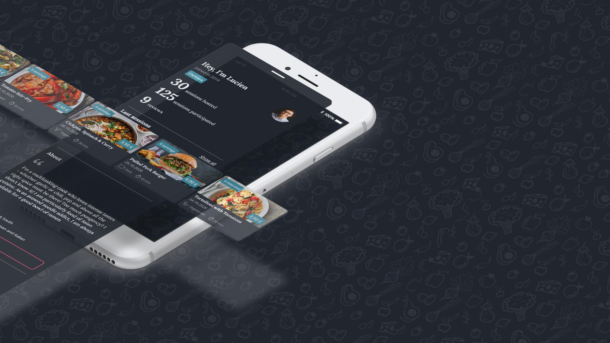
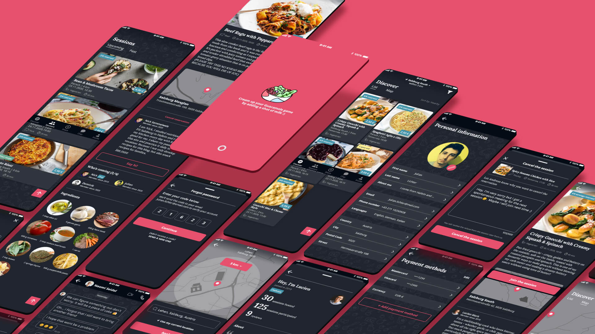

App concept: Cookflow
Journey towards a high-fidelity interactive prototype
Project: University Project (Applied Prototyping in HCI)
Duration: 6 weeks
Tool: Adobe XD
About Cookflow
The aim of this project was to design a borrowing and renting app concept and build a component library from scratch. I envisioned a platform where users could host cooking sessions, splitting the cost of ingredients to fight food waste. This concept, named Cookflow, went beyond than just feeding people, but it also introduced them to new recipes and cooking techniques.

Deliverables
To conceptualize and visualize the concept, there were several key deliverables:
-
Flow Map: Provide an high-level overview of the entire app outlining the main features.
-
Low-Fidelity Prototype: Basic designs focusing on structure, offering an idea of the interface.
-
Interactive High-Fidelity Prototype: A vertical prototype expanding on the main features, showcasing full functionality in a detailed, visually polished design.
In the next sections, I want to get into more detail on how I set up my component library, the transition to high-fidelity prototype and the resulting challenges of this process.

Low-fidelity wireframes and component library setup
During the stage of low-fidelity prototyping, I decided to create a component libarry using Adobe XD’s linked file system. This approach allowed for quick updates to core UI elements across different screens and design files. The atomic design methodology from Brad Frost was applied, which helped break down the UI into small, reusable components and assets, ensuring consistency across the design.
Building a modular system is time-saving when there is a plenty amount of repetitive elements and screens involved. However, depending on the fidelity it also brought challneges, especially in the beginning when the speed of developing variations was affected.

Transition to high-fidelity wireframes
With the basic structure in place, I moved to high-fidelity wireframes, refining visual elements like font sizes, color schemes, and hierarchy. Using nested components ensured consistent assets across screens to systematize properties like padding and margins.
While nested components streamlined iterations, they introduced complexity and performance issues, slowing the design process due to increased file size and layer count. The layered structure of these components ultimately slowed down the design process, revealing the trade-off between flexibility and efficiency.

In refining the design language, I embraced the challenge of aligning the visual hierarchy to create a cohesive and harmonious experience. This involved carefully determining suitable font sizes and establishing a unified color palette. As the process unfolded, I gained deeper insights into how various elements—such as list items, cards, and overlays—interact visually. These learnings guided iterative adjustments, allowing me to fine-tune the design and achieve a well-balanced and polished outcome.
To address this, I drew inspiration from Google Material Design, creating a system that used z-index elevation levels paired with a fine-tuned color gradient to better reflect layer hierarchy.

Outcome
This project taught me valuable lessons about the importance of structrued design processes. Setting up a design system from scratch, while time-consuming, proved to be extremely beneficial during later stages of the project. Despite technical challenges with Adobe XD, the modular system I created allowed retrospectively for flexibility and scalability, laying the methodical groundwork for future design projects.

Lessons learned
Coming from a background in Photoshop for UI design (yes that was a thing if you design for fixed hardware display layouts), this required a shift in my design approach:
-
Avoid early complexity in component composition in order to focus on variations in design exploration.
-
Setting up a solid foundation for font sizes and color schemes early in the process is important to transition from low-fidelity to high-fidelity screens.
Interested in connecting?
I’d love to hear from you! Whether you have questions, want to explore something further, or just feel like saying hi, don’t hesitate to reach out.